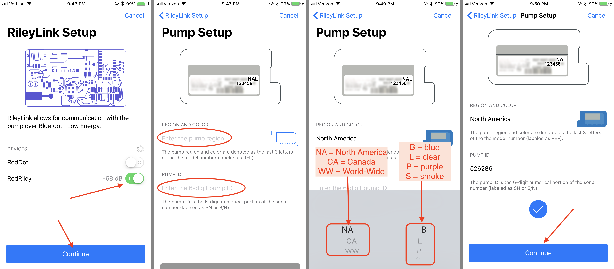

Configuring Loop⌁
Now that you have the Loop app installed on your iPhone, we need to input the settings so that the Loop can work for you.
Normally, we would start by explaining the displays on an application, but your Loop won’t have much showing initially until we get some basic settings input. So, let’s start by clicking on the Loop Settings button in the tool bar. It looks like a little sprocket. On the settings screen that opens, click on Add Pump.

Helpful tip: Before you begin the rest of the setup process, go to your pump menu and turn off Patterns under the basal menu settings. Make sure your Standard basal rate schedule is up-to-date and accurate. Make sure your pump's temp basal type is set to units/hour (not percent). Make sure your maximum basal rate and maximum bolus settings in the pump are reasonably set for your particular needs.
Add Pump⌁
You will now need to do a few simple steps:
- Make sure your RileyLink is turned on and nearby, then you will see a RileyLink listed in this area of the settings. Actually, you will see a list of any RileyLinks that are in the nearby area. Slide on the toggle for your RileyLink.
- Add your pump's region, color and serial number.
- Click the Continue button to finish the addition of your pump.

Once your pump is setup, you will be finishing these steps:
- Change your pump time using the Loop app (and reading all the info on that screen)
- Import your pump's Standard basal rate schedule, and the maxium basal rate & maximum bolus (collectively called "delivery limits" in Loop)
- Select your pump's battery type (lithium or alakine)
- Leave the Preferred Data Souce on Event History
Event History must be selected for Nightscout to display temp basals, carbs, and boluses from Loop. Event History must also be selected in order for prime events to be detected and NOT contribute to iob during site changes.

Once you finish those steps, click on the Settings button in the upper left corner to take you back to the Loop's settings menu. If you ever need to change the pump time or access the RileyLink menus, you will be clicking on the pump's image in Loop settings.
CGM Selection⌁
Select one of the options from the menu:
- Sof-Sensor/Enlite
- G4 Share Receiver
- G5/G6 Transmitter
If you select the G5/G6 Transmitter, you will be prompted to enter the transmitter ID number. Don't forget to update your transmitter ID when you change transmitters, otherwise Loop will not work offline.
If you are a Dexcom user, don't forget to enter your Dexcom Share information (this will be the same as your Nightscout Bridge username and password, too). By entering your Dexcom Share account info, Loop will be able to fetch from the Dexcom servers via the internet when local BG readings from spying on the receiver/transmitter directly are not working. The switch between local readings to server data pull will happen automatically when needed. When Loop is using data from Dexcom servers, a small cloud will appear above the BG reading in Loop.
The Share account login is the same as what you used to login to your Dexcom app on your iPhone. Dexcom Share account is not always the same login info as your Dexcom Clarity account. For G4 users, the Share account is found in the account tab on the app. For G5/G6 users, unfortunately, there is no information in the app displaying what your account name is. The information is entered when you first login to the app and then is never displayed again, nor visible under any information screens. If you have forgotten your G5/G6 account info, you can delete the Dexcom app and redownload it to try logging in again. This will not cause a restart of any sensor sessions in progress.
Correction Range⌁
This is where you set your blood glucose range that you would like Loop to correct to. Correction Range is not necessarily what your target BG range that you have discussed with your endocrinologist; generally the doctor's range may be much wider. For example, you may keep a correction target of 100-100 for Loop to aim to, but use a desired BG target range of 90-150 when discussing things with your endo about "time in range".

Click the + in the upper right corner to add correction BG range(s). You can have multiple ranges based on time of day, but the first setting of the day needs to begin at midnight to be consistent with your Medtronic pump.
Ranges will be entered in mg/dl or mmoL automatically based upon how your BG values appear your BG chart. By default they are set to mg/dl, however once BG values arrive in mmoL these settings can be entered in mmoL. If you are planning to use mmoL, be sure to wait to set your correction range until after you have started to receive BG values. If you do these in the wrong order, then your chart may have incorrect Y axis. If you come across this issue, you can also remove all of your target ranges and enter them again. Once you are receiving BG values in mmoL, you can add your correction range(s) in mmoL.
Correction ranges can be a single number, such as 100-100 mg/dL. Generally, you don't want to keep correction ranges too wide otherwise Loop will be sluggish to correct. Most users keep correction range no wider than about 0 to 20 mg/dl between the min and max values.
Override Ranges⌁
Set the “override” ranges for temporary alternate correction ranges. These override ranges will only be enacted when you specifically activate "Pre-Meal or “Workout Mode” using the buttons on the main Loop display or watchface. While active, they replace the correction range for Loop's recommendations. If the override ranges are not entered in this section, the buttons will remain grey and unusable on the main screen.
Pre-Meal The pre-meal target is designed to be used to as an easy way to get a small amount of insulin delivered before a meal (similar to the "eating-soon" mode discussed in OpenAPS) in order to help control post-meal BG spikes.
If your normal target is 100-100 and pre-meal target is 80-80 mg/dl, for example, Loop will give you an extra push to get you to the lower target number before the meal. The pre-meal target, when activated by pressing on the icon, will stay active for one hour, until carbs are entered, or until it is manually cancelled...whichever comes first.
Loop will adjust any insulin bolus as needed based on the insulin provided during this pre-meal time.
Workout Mode Workout Mode override targets are designed to temporarily set targets higher in anticipation of exercise or other activities which tend to make the Looper more insulin sensitive or need less insulin. By setting a higher temp target ahead of activity, Loop will recommend less basal rate(s) than normally scheduled in order to to bring BGs up to the higher target.
The success of this strategy will be dependent on how far in advance of activity the temp target is set. Generally, users set the target approximately 1-2 hours in advance of planned activities...but the optimal timing will depend on the activity, duration, and intensity. Additionally, any insulin on board from recent boluses may overwhelm the Loop's ability to counteract exercise-induced lows through lower temp basals alone.
Suspend Threshold⌁
Suspend Threshold is a required data entry for successful configuration of Loop. Your Loop will not turn green without setting this value. This value affects both bolus and basal recommendations by Loop.
Bolus⌁
- If you are trying to bolus a meal while any part of the predicted BG curve is below this suspend threshold value, Loop will not recommend a bolus. Instead, you will need to wait until your prediction curve is above the suspend threshold value in order to bolus.
Basal⌁
- If your current or forecasted BG is below the suspend threshold, Loop will always recommend a temp basal rate of 0 u/hr.
Basal Rates⌁
Your basal rates have already been initially populated from the pump's standard basal schedule as part of your initial setup, above. Only one basal schedule may be set in each Loop app. If you need to edit your basal schedule, simply make the edits as needed and then click on Save to Pump... button. As a safety precaution, Loop will not allow you to only save the edits to the Loop app alone...you must successfully save the changes back to the pump to ensure Loop and the pump are in sync.
If you make any basal edits and simply use the Settings button to go back to the menu without successfully saving to pump, the changes you made will not be saved in Loop app. Loop v1.9 makes saving to pump a mandatory step to successfully editing basal rates.
Delivery Limits⌁
The maximum basal rate and maximum bolus settings are collectively refered to as Delivery Limits. Your Loop will read these from the pump as part of adding a new pump to Loop. For safety, similar to basal schedule, you must keep these values the same on both the Loop app and within the pump settings. If you edit these settings in Loop app, always use the Save to Pump... button similar to the basal rate edits discussed above.
Maximum Basal Rate⌁
Maximum basal rate is the maximum temporary basal rate that the Loop is allowed to enact to meet your correction range. See the Operation section discussion for Close Loop for some suggestions regarding appropriate Maximum Basal Rate.
Maximum Bolus⌁
Enter your desired single bolus maximum here. For safety, don't set a maximum bolus limit any higher than your typical large meal bolus.
Insulin Model⌁
There are four Insulin Models to choose from; Walsh, Rapid-Acting Adults, Rapid-Acting Children, and Fiasp. If you want to read the nitty-gritty discussion that went into the development of these new curves, you can see that in GitHub here.
You can click on each model and see what each model's insulin activity curve looks like. If you select the Walsh model, and adjust the insulin action duration (DIA default is 6 hours), the curve will be adjusted accordingly based on your selection.

The differences between the new (Rapid-Acting and Fiasp) models have to do with the timing of the Peak Activity of the insulin. Currently, all the models are defaulted [in the code]( to an insulin duration of 360 minutes...but the peak activity of the various curves differs:
- Rapid-acting adult curve peaks at 75 minutes
- Rapid-acting child curve peaks at 65 minutes
- Fiasp peaks curve peaks at 55 minutes
As the peak time decreases, the Loop will expect a quicker insulin impact on BG AND the tail of the insulin dose will be slightly less agressive compared to a curve with a later peak time. In other words, Fiasp will be more powerful soon after a bolus and less powerful 5 hours later than an equal amount of insulin modeled using the other models.
The Walsh model's insulin duration can be set by the user from within the app. The peak time of the Walsh curve is 100 min at a DIA of 4 hours. As user adjusts DIA, the peak time will be dynamically adjusted.
Carb Ratios⌁
Click the + in the upper right to add carb ratios for various times of day. Loop works best if you have tested and optimized your carb ratio settings for accuracy.
Beware of other apps writing carbs to Health app
If you are using a third-party app (such as Spike or MyFitness) that can write carbohydrates to the phone's Health app, you will need to edit the permissions to make sure Loop doesn't double carb entries. You should disable the third-party app's permissions in Health so that it can only read and not write. See Carb Entries with Third Party apps for more information about this setting.
Insulin Sensitivities⌁
Click the + in the upper right to add insulin sensitivities for various times of day. Loop works best if you have tested and optimized your ISF settings for accuracy. Insulin sensitivities can change for many reasons including waiting too long to change your infusion set. Loop will not auto-detect changes in ISF.
Closed Loop⌁
The Closed Loop switch controls the Loop operation mode for the application. This operation mode determines whether Loop automatically enacts recommendations (i.e., sets temp basals) to the insulin pump.

When the Closed Loop switch is in the (Off ) position, Loop WILL NOT enact recommended temp basals automatically. Instead, it will display Recommended Temp Basals on the main status display, just above the Glucose graph. This is called Open Loop, and is a good way to understand how Loop will function, and what type of recommendations it would make. If you click on the recommended temp basal line while in Open Loop mode, Loop will implement the temp basal.

When the Closed Loop switch is in the ( On) position, Loop WILL automatically enact recommended temp basals on the configured insulin pump. This is known as Closed Loop. Typically, Loop will show the recommended temp basal just above the Glucose graph prior to automatically enacting it. It may take a minute or so for the Loop to enact the recommended basal. Once the temp basal has been enacted successfully on the pump, the recommended temp basal will disappear from the screen and the new temp basal will be represented in the insulin delivery graphics.
Issue Report⌁
If you run into problems or errors with your Loop, the Issue Report can be used to help identify where the problem is occurring. The Issue Report is automatically generated and you can share it via email. Frequently, if you go to Gitter or Facebook for help with a technical problem, an Issue Report will provide insight to what the potential problem is.